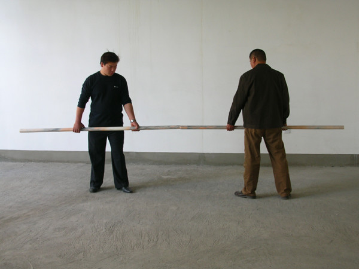

石玩玩

行为、图片和现场录像，石棍直径5cm，长2m+2m，录像时长59分30秒，彩色有声单屏幕，可变尺寸，2005
两人将一根断开的石棍对接，直到精疲力竭。
第一次对玩玩有印象，是2005年10月在后现代城的“一万年”展览上。他的作品是一根4米长，被用车床车的很光滑的一根直径有7、8厘米的、带有蓝白和肉色花纹的大理石石柱（确切说应该是石棍），中间断开来，断口留有新茬。作品要求两个民工双手握着这根断开的石棍，尽量端平端直将断茬対准在一起，像两个人共同端着一根没有断开的石棍。现场两个人就这样端着，直到力气和耐心用光，石棍的断茬对不准。人不是机器，总有力气用尽的时候，而且两个人也很难平衡对方的着力点，几乎是一开始就不断出现断茬松动，然后是错动，同时石棍开始高低不平左右不直。我当时看出来，玩玩的作品着力点与雕塑家不同，瞄准的是端着石棍——被要求尽量将断茬对准的两个人的努力。因此这件作品就被玩玩自己命名为《石玩玩》。——隋建国